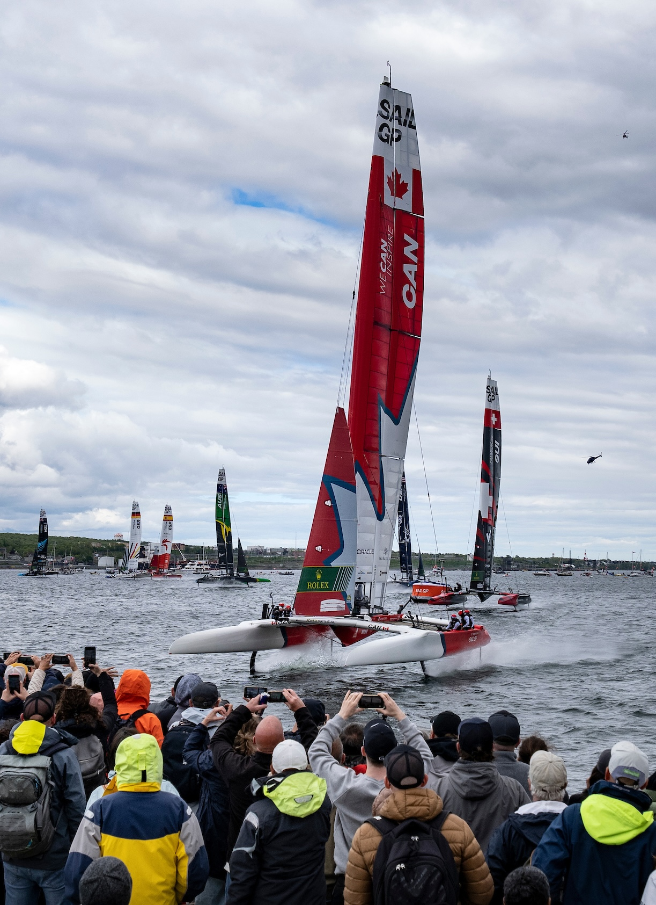

keyboard_arrow_down
① 🟠 ESP
LEADER
② 🇺🇸 USA
+76m
③ 🇦🇺 AUS
+108m
- - -
⑥ 🇨🇦 CAN
+224m
19:15 UTC
LIVE
🇨🇦 CAN | 46.1 km/h
speed
46.1
km/h SPEED
navigation
26°
HEADING
air
13.3
km/h VMG
auto_awesome
AI Commentary
CAN accelerating into mark 2 — speed up 18% in 12s. Possible tactical push.
💨 Wind Shadow @ 19:11:15
19:05:31
Speed
Wind
Rank
19:25:00